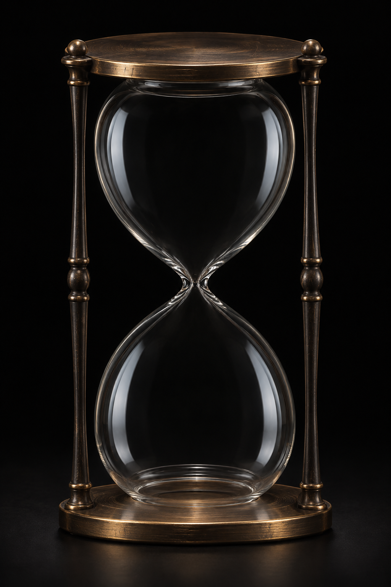

準備ができました
あなたのための、990分。
カップ麺は商品の指定時間に合わせて変更できます。
限りある時間を何に捧げるか。その考え方に共感して生まれた、静かなタイマーです。
熊谷正寿氏が会見で語った「命の砂時計」に着想を得ています。990分は、睡眠を除いた一日の時間という考え方に由来します。
小さなことでも、あなたにとって大切なことに。
GMOグループおよび熊谷氏とは関係のない個人制作です。設定はこのブラウザ内に保存されます。画面を閉じた状態での終了通知は保証されません。再読み込みで計測はリセットされます。